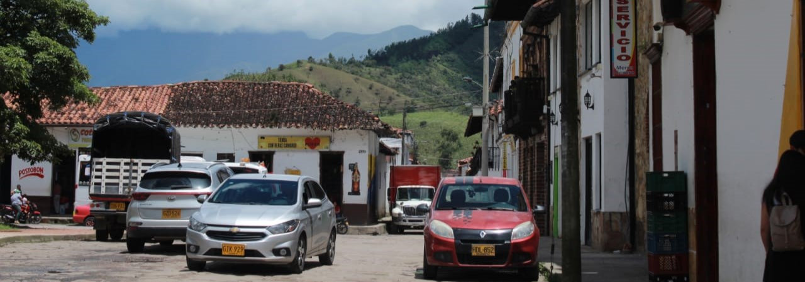

Fotografía tomada a cosplayer de Zoro en SOFA 2022.

Fotografìa tomada en celebracion de cumpleaños.
Fotografìa tomada para trabajo universitario, enfocado en foco selectivo de la càmara.
Fotografia tomada en SOFA 2022 utilizando la luz de fondo como contra luz y usandolo como recurso.